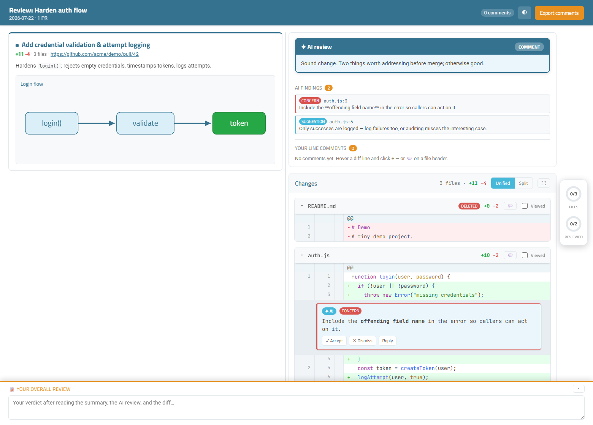

Start with the PR summary and the group’s purpose.
Example review
Use typed, capped retry delays
This is the document Trace Review creates for a pull request: the change summary, review findings, dependency context, and diff in one place.

What changes in the review
Read the decision before the files.
Move from a definition to its usages, config, and tests.
Keep LM findings and your line comments anchored to the diff.